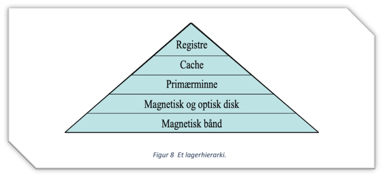

Datamaskinarkitektur - lagerhieraki
Oppgaven
Dette var en gruppearbeidsoppgave, hvor vi skulle spille inn en video om emnet vi fikk utdelt av faglærer.
Oppgaven var å vise og forklare et lagerhieraki som inkluderte moderne lagerteknologier.
Vi skulle også sammenligne de viktigste spesifikasjonene for hver teknologi og vurdere kostnad for hver teknologi.
Læringsutbytte
- Forståelse av forskjellige lagringsteknologier, inkludert både tradisjonelle og moderne typer.
- Kunnskap om hvordan disse teknologiene brukes i datamaskiner, og hva som skiller dem fra hverandre.
- Evnen til å sammenligne de viktigste spesifikasjonene for hver teknologi, som hastighet, kapasitet og pålitelighet.
- En vurdering av kostnader for de ulike teknologiene, slik at jeg kan gjøre en informert vurdering av hvilken teknologi som passer best for ulike bruksområder.
- Arbeide i gruppe, holde møter, planlegge og utføre oppgaver innen gitte frister.
- Bruk av verktøy som GitLab, PowerPoint, Word og Excel.
Gjennom arbeidet med prosjektet har jeg opparbeidet meg en dypere forståelse av ulike lagringsteknologier, inkludert både tradisjonelle og moderne løsninger.
Oppgaven krevde at vi analyserte hvordan disse teknologiene brukes i datamaskiner, samt identifiserte forskjellene mellom dem.
Dette ga meg innsikt i teknologiens unike egenskaper, inkludert hastighet, kapasitet og pålitelighet, og hvordan disse faktorene påvirker valg av teknologi for ulike bruksområder.
Jeg lærte også å vurdere kostnadene ved ulike lagringsteknologier, noe som hjelper meg å gi informerte anbefalinger om hvilken løsningner som passer best i ulike situasjoner.
Dette har styrket min evne til å ta veloverveide beslutninger basert på både tekniske og økonomiske vurderinger.
I gruppearbeidet bidro jeg med å organsiere møter, planlegge oppgaver og studere de ulike spesifikasjonene for ulike teknologier. I tillegg brukte gruppen
GitLab for samarbeid, Excel for timeliste, og PowerPoint for å presentere resultane våre. Dette gjorde det mulig for gruppen å arbeide effektivt og holde oss innenfor tidsfrister.
Denne lærdommen har stor overføringsgrad til arbeidslivet, og jeg føler meg bedre rustet til å delta i teknologiske vurderinger.
Videre har erfaringen med å jobbe i team og bruke profesjonelle verktøy gitt meg praktisk erfaring som er direkte relevant for moderne arbeidsplasser.
Avslutningsvis har prosjektet ikke bare gitt meg faglig kompetanse, men også ferdigheter jeg kan bruke i en profesjonell kontekst for å møte fremtidige utfordringer.
Resultat
Vi lagde en PowerPoint video, hvor gruppemedlemmene snakket om de ulike lagringsmetodene og sammenlignet de.
Det ble også skrevet en rapport om arbeidet vi utførte.
Oppgaven ble bestått, det var ikke karakter vurdering på denne oppgaven.
Nedlastninger:
Klikk på knappen under for å laste ned filene du ønsker fra prosjektet.